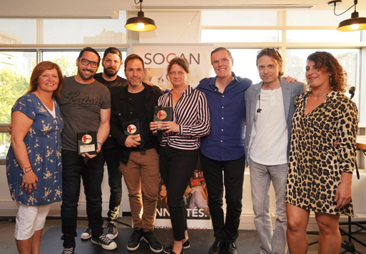

BLÜ DOG MÉDIA
PRIX SOCAN POUR L’EXTRAIT « POUR COMMENCER »
PIÈCE TITRE DU FILM LA COURSE DES TUQUES
C’est avec grande fierté que Blü Dog Média reçoit le prix SOCAN pour l’extrait « Pour commencer », pièce titre du film La Course des tuques.
Interprétée par Alex Nevsky et composée par le duo Fred St-Gelais et Nelson Minville, la pièce « Pour commencer » a été au sommet du palmarès radio Top 100 BDS. Une belle victoire pour la jeune entreprise. Blü Dog Média remercie Musicor et tous les collaborateurs qui ont aidé à faire de cette chanson un succès.

Blü Dog Média est en effet une jeune entreprise de productions sonores cinématographiques et télévisuelles, d’éditions, de développement d’artistes et de gérance, créée en 2018 par Nancy Brault (vice-présidente) et Marie-Claude Beauchamp (présidente de Blü Dog Média et CarpeDiem Film&TV inc.).
Blü Dog Média a produit la bande sonore du film La Course des tuques/Snowtime et travaillé de concert avec les producteurs du film (CARPEDIEM FILM&TV) à la sélection des artistes ainsi que l’équipe de Musicor pour la mise en marché. L’entreprise a veillé aux productions des deux bandes sonores, soient celle pour le film francophone et anglophone. Blü Dog Média a également coordonné et produit tous les EPK d’artistes et vidéoclips des chansons du films (francophone et anglophone). Dans les deux versions, l’équipe a réussi à dénicher des artistes de renoms tels que Cyndi Lauper, Alex Nevsky, Dumas, Ludovick Bourgeois, Garou, Corneille et a obtenu une licence exclusive du groupe U2 qui a accepté que le groupe Cool Kids reprennent la chanson It’s a Beautiful Day.
Blü Dog Média est également fière d’avoir mis au monde un groupe unique au Québec, les Cool kids, six jeunes talents âgés de 13 à 16 ans: Camélia, Félicia, Gabrielle, Keren, William et Zion-Luna. Blü Dog Média a ainsi produit le tout premier mini-album, les vidéoclips et les spectacles, en collaboration avec Musicor. En plus de la production, Blü Dog Média assure la gérance du groupe et obtient des opportunités uniques pour que celui-ci puisse rayonner et faire voyager leur musique.
Blü Dog Média produit parallèlement la musique de la série dérivée du film Les mini-tuques/Snowsnaps qui est en ondes sur Télétoon, La chaîne Disney et TreeHouse ainsi que la musique pour une expérience virtuelle 5D unique, présenté exclusivement au Musée Grévin à l’hiver 2019.
L’équipe travaille également au développement de la carrière de Josh Alexander, jeune auteur-compositeur-interprète prometteur. L’entreprise agit en tant que producteur et gérance de l’artiste. Ce n’est qu’un début...
Source : Blü Dog Média
Marie-France Privée | marie@mariefranceprivee.com | 514-814-7844
|